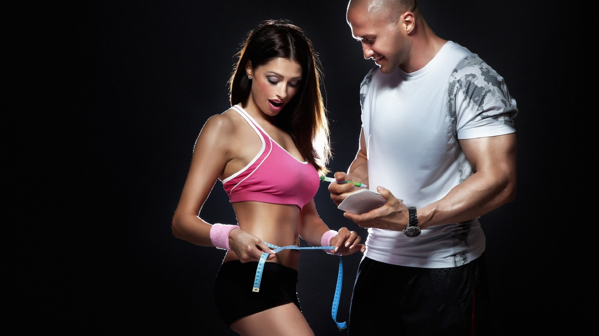

<div style="position: relative;">
  
  <div class="air-card" style="position: absolute;
    top: 211px;">
    <section>
      <p>
        [ПРИДУМАТЬ ТЕКСТ]
        [СДЕЛАТЬ ФОТКУ БЛОНДИНКИ С ХВОСТИКОМ В СПОРТИВНОЙ ФОРМЕ СО СВИСТКОМ В РУКАХ С ФОКУСОМ НА ДЕВУШКЕ И ФОНОМ
        СПОРТКЛУБА ИЛИ СТАДИОНА]
        Любому мало-мальски интересующемуся бегом человеку известно, что в последние несколько лет число
        бегунов-любителей
        увеличилось в несколько раз по сравнению с 2000-ми. Только в одном 2013 или 2014 году этот прирост составил
        300%.
        Но в отличие от движения КЛБ в советское время или немногочисленное 90-х нынешние бегуны более осознанно
        подходят
        к своим занятиям и к вопросу. В первую очередь это заметно по числу изданных на тему бега книг. Надо сказать,
        что
        многие из них очень качественные, системные, и могут при грамотном осмыслении стать хорошим путеводителем к
        планированию тренировочного процесса.
      </p>
      <button sl-button slType="primary" style="margin: auto; display: block;" (click)="beTrainer()">
        Стать тренером
      </button>
    </section>
  </div>
</div>
